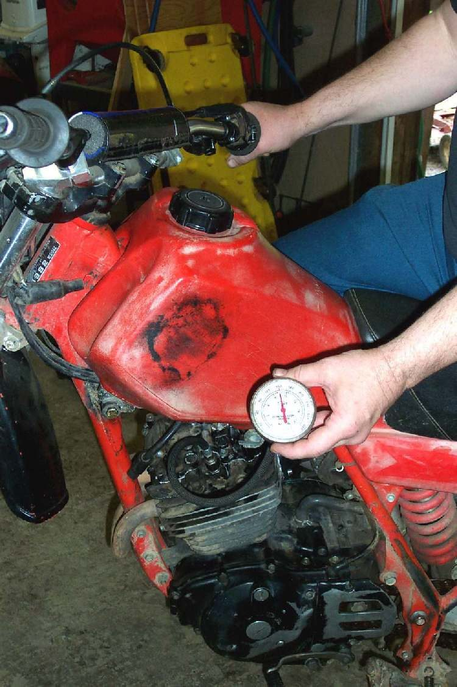

Photo: Dan's Motorcycle Repair Course (dansmc.com), used with permission.
This is a quick yes or no check for compression when no gauge is available. It cannot give a number. It only shows whether the engine has enough pressure to start at all. When a gauge becomes available, do a proper compression test.
Safety
- Let the engine cool first. A hot engine and exhaust burn.
- Switch the ignition off and remove the plug cap or earth the cap on the engine, so the coil cannot fire into the open.
- Keep fuel away. On a carburettor bike turn the fuel tap off.
- Wear eye protection. Oil, dirt and gas can blow out of the plug hole.
- Hold a thumb, not other fingers, over the hole and keep the hand clear of the kickstarter.
You need
- A plug spanner and a helper to kick or crank the engine.
- A clean cloth to wipe dirt from around the plug before it comes out.
Steps
- Wipe or blow dirt from around the plug. Remove the plug.
- Switch the ignition off and earth the plug cap, or remove it.
- Press your thumb tightly over the plug hole.
- Have the helper kick or crank the engine through several turns.
- Feel the pressure build under your thumb on the compression stroke.
- A healthy engine pushes the thumb off the hole sharply. If the thumb stays put with hard pressing, the compression is too low for the engine to start.
- Refit the plug and cap. Do not leave the plug out.
Check your work
- You can tell which of two results you have: strong pressure that pops the thumb off, or weak pressure that does not.
- Plug refitted at the right torque for your bike (use the value in your bike's manual).
If it did not fix the problem
- Strong pressure: compression is not the main fault. Go back to Engine turns over but will not start.
- Weak pressure: check valve clearance, then Low compression.
- On an engine with a compression release, make sure the release lever or cable is not holding the exhaust valve open: Check a compression release.